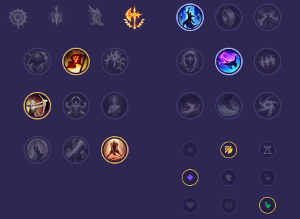

Starter: Ostrze Dorana Mikstura Zdrowia Core Bulid: Łamacz Falangi Pancerniaki Gruboskórność Steraka Full Bulid: Pancerz Umrzyka Siła Natury Taniec Śmierci

Słaby przeciwko: - Urgot - Vayne - Dr. Mundo - Pantheon - Quinn - Kennen Dobry przeciwko: - Tryndamere - Yone i Yasuo - Nasus - Ambessa - Mordekaiser - Garen